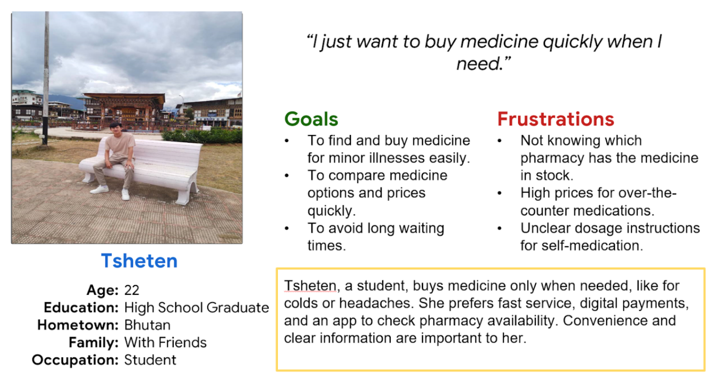

User Personas

Phuntsho - The college Student

Dorji Tseten - The College Student
A university student who requires regular emergency medication, struggles with finding stocked medicine at nearby pharmacies and when the hospital is far from home. He needs a reliable way to check availability before visiting, as delays can impact his health.
Develop a Pharmacy Locator App that allows users to quickly find nearby pharmacies with real-time medicine availability, pricing, and stock updates. The app will feature a search function, live inventory tracking, and the option to reserve or purchase medicine directly. This ensures timely access for emergency needs and convenience for minor purchases.
Our pharmacy locator app will let users find nearby pharmacies with available stock and pricing, which will help students like Tsheten make quick and informed purchasing decisions. We will measure effectiveness by tracking search frequency and purchase completion rates.
For user research, I conducted interviews with Bhutanese university students like Phuntsho and Tsheten to understand their challenges in accessing medicines. I found that users were more concerned about real-time stock availability, long wait times, and lack of dosage guidance. Frequent buyers like Phuntsho needed reliable access to emergency medication, while occasional buyers like Tsheten valued speed and clarity during purchases. These insights will shape the design of the Medical Store app to prioritize real-time inventory tracking, pharmacy locators, and in-app guidance for a faster, safer, and more convenient experience.
From our research, we discovered these four critical user challenges
Users often find that pharmacies are out of stock after arriving.
Buyers want the closest pharmacy with the required medicine but currently lack a reliable locator tool.
Occasional buyers struggle to name the medicine they need.
Users are sometimes unsure how to take medicine correctly, especially without pharmacist guidance.
Phuntsho - The college Student
Dorji Tseten - The College Student
Usability testing was conducted with patients to evaluate the effectiveness of a proposed pharmacy locator app, which supports medicine availability checks, location services, and digital purchases.
Unclear Medicine Availability: Users like Phuntsho were often unsure if pharmacies stocked their required medication, leading to wasted visits and frustration, especially when traveling long distances.
Desire for Real-Time Inventory and Location Details: Participants expressed the need for a real-time pharmacy inventory system showing stock availability, operating hours, and nearby locations to save time and avoid unnecessary trips.
Need for Digital Guidance and Reminders: Users desired in-app features such as dosage instructions, reminders via SMS, and follow-up alerts to ensure safe and timely medication use.
Interest in Seamless Purchasing Experience: Occasional buyers like Tsheten appreciated options like digital payment, price comparison, and cashback incentives, which made transactions faster and more convenient.
Based on the usability study, users were often unsure whether their required medication was available at nearby pharmacies, leading to frustration and wasted trips. To address this, I implemented a real-time inventory feature within the app that clearly displays medicine availability, pharmacy location, operating hours, and pricing to help users make informed decisions before visiting.
All fields related to medicine search, availability, and pharmacy selection are clearly labeled with accessible descriptions. This ensures users with cognitive impairments or screen reader users can understand key information such as medicine names, stock levels, and pricing.
Interactive elements like search filters, map navigation, and purchase options support visible focus indicators, making it easier for users navigating via keyboard or assistive devices to follow their actions within the app.
A consistent layout and logical user journey—from searching for medicine to completing a purchase—is maintained throughout the app. This supports users with cognitive challenges by reducing confusion and making interactions predictable and intuitive.